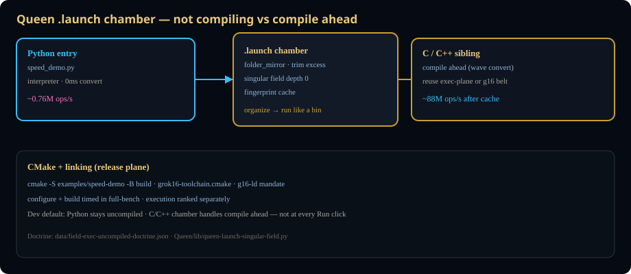

Grok16 4.7.1 — dev runs at normal speed; compile is chamber-organized and ahead, not on every click.

| Lane | Dev behavior | speed_demo @ 1s |
|---|---|---|
| Python | True interpreter (CPython / gpy-16 GrokVM) | ~710,021 ops/s |
| C / C++ | Chamber compile ahead — no line-by-line interpreter | ~87–95M ops/s after plane cache |
| CMake | Configure + build once; bin reused | ~93M ops/s |
Doctrine: data/field-exec-uncompiled-doctrine.json
.launch chamberlaunch-singular-plane/<hash>/plane-<stem>convert_ms excluded after cache hitModule: Queen/lib/queen-launch-singular-field.py
# Uncompiled Python via chamber
QUEEN_LAUNCH_SINGULAR_FIELD=0 python3 Queen/lib/queen-launch-chamber.py run examples/speed-demo/speed-demo.launch
# Singular plane (compile ahead + cache)
python3 Queen/lib/queen-launch-singular-field.py run examples/speed-demo/
# Full versioned bench
SPEED_DEMO_TARGET_SEC=3 ./scripts/grok16-toolchain.sh exec-full-bench